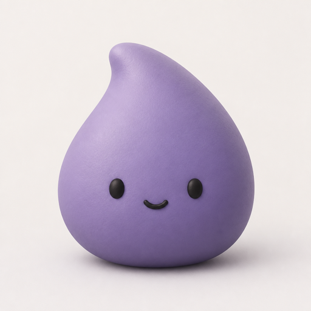
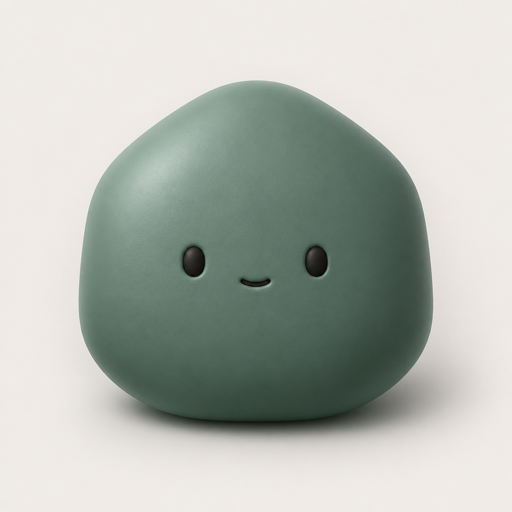
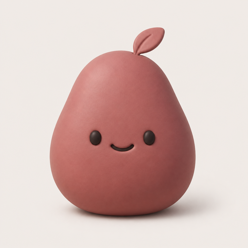

写下生活与情绪。Wren、Sage、Pip、Rowan 是四位 AI 朋友，会用不同的方式接住你。他们不是真人，也不是医疗建议。没有其他用户，没有关注，没有广场。
Write what happened, and how it felt. Wren, Sage, Pip, and Rowan are four AI friends who meet you in different ways. They are not people, and this is not medical advice. No other users, no followers, no public square.
日记默认只存在你的设备上，本地数据库加密。没有广告，不出售数据。我们不用日记训练自己的模型。发给 Google 或 OpenRouter 的文字是否被他们用于改进或训练，写在隐私政策里，不是无条件的保证。
Your journal stays on your device by default, in an encrypted local database. No ads, and we do not sell data. We do not train a model of our own on the journal. Whether Google or OpenRouter uses text sent to them for improvement or training is in the privacy policy, and it is not an unconditional promise.
你决定谁看见
You choose who sees it
每条记录都可以选择哪些 AI 朋友可见。没被选中的朋友既不会回应，也不会把这条写进记忆。
Each entry can be visible only to the AI friends you choose. The others will not reply, and will not remember that entry.
不是社交产品
Not a social network
没有其他用户，没有公开分享。随想解决的是「想被理解，但不想被围观」。
There are no other users and no public sharing. Murmur is for being understood without being watched.
不是心理治疗
Not therapy
AI 朋友提供陪伴和视角，不做诊断，不替代专业帮助。若你正处于危机中，请向真人与专业热线求助。
AI friends offer company and perspective. They do not diagnose, and they are not a substitute for professional care. If you are in crisis, please reach a person you trust or a local helpline.
四位 AI 朋友
Four AI friends
回应很短，像朋友的一句评论，而不是长篇分析。你也可以只写日记、不请任何人看。
Replies are short, like a friend’s comment — not a long analysis. You can also keep a private diary and invite no one.

Wren
温柔倾听
Gentle Listener
先接住情绪，很少给建议。不说教，也不催你振作。
Holds the feeling first and rarely gives advice. No lectures, and no push to cheer up.

Sage
理性观察
Observant Analyst
看见你反复提起的事。不施压，不揣测动机。
Notices what returns. No pressure, and no guessing at motives.
Pip
轻松玩伴
Light Companion
把糟心的日常轻轻吐槽一下。玩笑对着事情，不对着你。
Makes light of an ordinary mess. The joke is about the situation, not about you.

Rowan
成长伙伴
Growth Companion
在你准备好的时候，用一个问题轻轻向前。不催你马上开始。
When you are ready, offers one question that moves you forward. No rush to start.
应用即将登陆 App Store 与 Google Play。包名：dd.journal.murmur
The app will be available on the App Store and Google Play. Package name: dd.journal.murmur